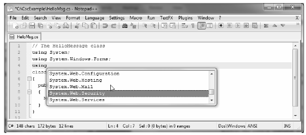

Another text editor I'd like to quickly point out is the open source (and freely downloadable) Notepad++ application. This tool can be obtained from http://notepad-plus.sourceforge.net. Unlike the simple Windows Notepad application, Notepad++ allows you to author code in a variety of languages and supports various plug-in utilities. In addition, Notepad++ provides a few other niceties, including the following:
Regarding this last point, the Ctrl+space keyboard combination will activate C# autocompletion support (see Figure 2-4).
Figure 2-4. Autocompletion using Notepad++
Note The options displayed by the autocomplete window can be modified and extended. Simply open up the C:\Program Files\Notepad++\plugins\APIs\cs.xml file for editing and add any additional entries.
I won't go into too many details of Notepad++ beyond what we have examined here. If you require more assistance, select the ? ? Help content menu option.